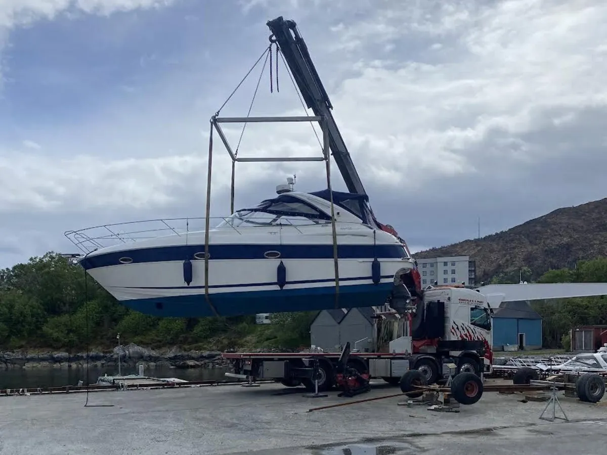

Forside/Kraning
Kraning
Kraning med fire kranbiler på 50 og 95 tonnmeter. Trygghet, punktlighet og presisjon i alle løft.
Løft
Kraning for alle typer oppdrag
Ingen oppdrag er for små, og ingen er for store. Vi tilpasser kranbil og utstyr etter oppdraget.
- Løft på byggeplass.
- Montering og plassering.
- Løft der det er trangt.

Sikkerhet
Sikkerhet først
Alle løft planlegges med utstyr, løftepunkt og sikker sone.
| 1. Behov | Hva skal løftes, hvor og hvor høyt. |
|---|---|
| 2. Tilgang | Plass til kranbil og løfteområde. |
| 3. Utstyr | Kranbil og løfteredskap. |
| 4. Gjennomføring | Løft med sikker sone. |
Skal dere løfte?
Ta kontakt, så planlegger vi løftet.